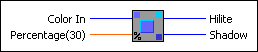

Hilite Color VI
Owning Palette: Picture Functions VIs
Requires: Base Development System
Returns two new colors well matched to the input color for highlight and shadow coloration, based on the input color and a percentage you specify.
You can use the highlight colors to create three-dimensionally shaded objects.

 Add to the block diagram Add to the block diagram |
 Find on the palette Find on the palette |